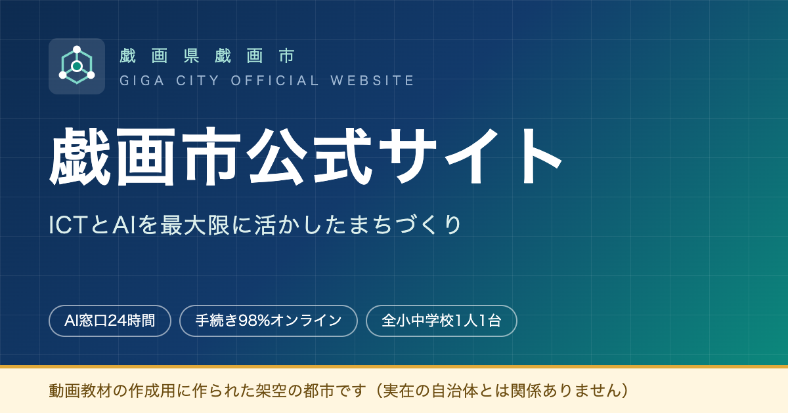

架空の都市であることの明記
戯画県・戯画市は実在しません
このサイトは、前多昌顕（教育ICT／YouTube教育動画）が制作した架空の自治体サイトです。Googleサイトの解説動画のなかで、外部サイトのURLを埋め込む手順を実演するために作りました。
掲載している市名・県名・地名・人名・組織名・数値・お知らせ・施策・イベント・データは、すべて架空です。実在の自治体、団体、学校、人物、商品、サービスとは一切関係ありません。
このサイトから手続きや申請、予約はできません。掲載内容を実在の情報として引用しないでください。
なぜ架空の市のサイトを作ったのか
Googleサイトの使い方を教える動画では、「外部のサイトをリンクや埋め込みで置いてみましょう」という場面が何度も出てきます。そこで実在の自治体サイトを使うと、視聴者が同じ操作をしたときにその自治体に無関係なアクセスが集まりますし、ページの構成が変わるたびに動画の説明が合わなくなります。
そこで、練習用の「行き先」を自分で用意しました。内容が変わらず、誰が何回開いても迷惑にならないサイトです。戯画市立戯画小学校を舞台にした動画シリーズと世界観をそろえてあります。
埋め込み練習用のURL一覧
Googleサイトの「埋め込み」や「リンクの挿入」で、そのままお使いください。
埋め込んだときに表示される情報
カード表示（サムネイル付きのリンク）で使えるように、各ページにOGP情報を設定しています。
| サイト名 | 戯画市公式サイト |
|---|---|
| タイトル | 戯画市公式サイト｜戯画県戯画市 |
| 説明 | ICTとAIを最大限に活かしたまちづくり。戯画県戯画市の公式サイトです（動画教材用に作られた架空の都市）。 |
| サムネイル | assets/ogp.png（1200×630px） |
| ファビコン | favicon.svg／favicon.ico（市章・架空） |



このサイトはページ全体をフレーム内に表示することもできます。Googleサイトの「埋め込む」→「URL」でカードとして貼る方法と、ページをそのまま枠の中に表示する方法の、両方を試せます。
利用について
- 研修・授業・校内の説明資料で、このサイトのURLを自由にお使いいただけます。連絡は不要です。
- スクリーンショットを資料に載せる場合は、架空のサイトである旨を添えてください。
- 内容は動画の都合で変更・追加することがあります。URLは変えません。
- ソースコードは GitHub（JohnnyMaeta/gigacity） で公開しています。
更新履歴
| 日付 | 内容 |
|---|---|
| 2026年9月27日 | 「戯画市のシンボルカラー」のページを追加（Googleスライドの色の選び方の動画用） |
| 2026年7月30日 | サイトを公開（トップ、くらし、教育、市政・AI戦略、観光、このサイトについて） |